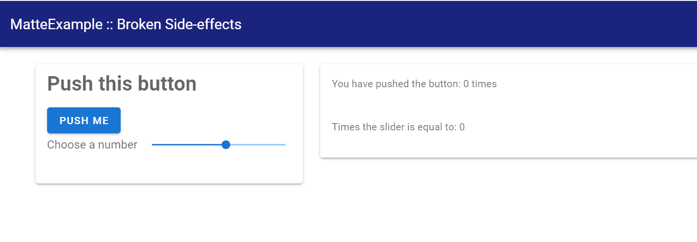

Side effects and manually changing the UI
Matte's computation model means that a server function can only affect one output – the output with the same id as the function name. But what if you want to change more than one? What if your function needs to have side-effects? This is likely to happen when you have functions that change some session variable. As warned in the previous guide, session variables are not reactive – if you have multiple outputs that depends on a session variable you have to manually update them when you change the value.
This is where update_output comes in. update_output can be called from inside any server-side functions to manually an output variable to a new value.
Setting the scene with an example
Let's make this problem concrete with a problem. Let's extend the app from the previous guide so that, along with displaying how many times the number has been clicked, we also combine that number with a number from a slider. The example broken_sideeffect mocks this problem up. Let's run this app and see the problem:
matte_example("broken_sideeffect", "broken_sideeffect")
includet("app.jl")
run_app(BrokenSideEffect)Open the app, which looks like this:

Push the button. You'll see the first output updates, but the second one does not. If you move the slider it does, because that re-triggers the output. But the button doesn't, because Matte doesn't recognise that my_count updates session.count.
Fixing the problem with side effects
We can fix this by changing how my_count works so that we explicitly and manually update the value of my_calc from within my_count:[1]
function my_count(my_button, slider, session)
if my_button
session.count += 1
update_output("my_calc", slider * session.count, session)
end
session.count
endDon't forget to add using Matte to your server module, so that we can access the update_output function.
If you replace my_count in your app.jl file, and refresh your app, it should now work properly. Both numbers will update every time you click the button.
This example is obviously extremely contrived. But in the next guide we'll see a concrete useful example of when you will want to use update_output: displaying progress notifications for long-running computations.
my_button as an input to my_calc so that my_calc, is recomputed anytime the button is pushed. This won't always work.
- 1Of course, for an example this simple, you could also solve the problem by having